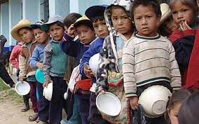

Utilización del nopal para combatir la malnutrición de niños y adolescentes en México
Resumen
En México la malnutrición afecta a miles de niños y adolescentes, entre las razones principales se encuentra la falta de información nutrimental, limitaciones al acceso de alimentos saludables, el entorno familiar y escolar, y la desigualdad social o marginación en determinados sectores del país, es por ello que a través de este artículo buscamos proponer un proyecto en el que se puedan atender estas tres problemáticas: desnutrición, sobrepeso y obesidad, mediante la promoción del consumo de nopal el cual es altamente nutritivo pues contiene aminoácidos esenciales, proteína, fibra, calcio y pocos carbohidratos.
Introducción
Desnutrición, Sobrepeso y Obesidad en México
La desnutrición en México es un problema latente en zonas en las que habitan personas que se encuentran en situación de pobreza, de acuerdo a un ensayo realizado por alimentación para la salud “Las personas y los grupos con menor poder social, económico o político es a quienes se les dificulta el acceso físico, social y económico a suficientes alimentos inocuos y nutritivos, y son ellas quienes más sufren de hambre o malnutrición”, vivimos en un país desigual en el que los alimentos más saludables o beneficiosos para la salud se encuentran disponibles sólo para personas que tienen un poder social más elevado, en consecuencia, es más complicado que todos puedan acceder a dietas saludables llegando tan sólo a cubrir parte de su alimentación con comida barata que no aporta ningún tipo de contenido nutritivo para la salud, esta carencia en nutrientes afecta a miles de niños y adolescentes año con año, que como resultado padecen de retraso de crecimiento, bajo rendimiento escolar, anemia, entre otras. Lo que nos recuerda lo necesidad de implementar nuevas medidas con las cuales logremos aprovechar ciertos alimentos en nuestro país, entre los que se encuentra el nopal, verdura que posee un precio muy económico por debajo de otras opciones en el mercado, y que por si fuera poco se encuentra entre las principales de desecho. De acuerdo a un estudio realizado por SEDESOL nos percatamos que a nivel nacional se desperdicia cerca del 63.3% de nopal que alcanzaría para alimentar a 0.87% de familias mexicanas al año, nuestra consiste en no sólo dar a conocer los beneficios de este alimento sino también de usarlo para combatir la malnutrición en nuestro país.

Por otra parte, el sobrepeso y la obesidad son problemas que lejos de disminuir aumentan con los años afectando a miles de mexicanos, es aquí en donde nos preguntamos ¿Qué medidas podemos implementar que estén en concordancia con la agenda 2030 pero también permitan ser funcionales en pandemia?, el problema es bastante complejo dado que incluye muchas variables entre ellas sociales y políticas, pero confiamos en que nuestro proyecto funcionará si buscamos alianzas con grupos de ayuda en los que se pueda difundir la iniciativa.
Objetivos
Objetivo general
INFO OBJETIVOS
Objetivos particulares
INFO OBJETIVOS
Planteamiento del problema
Se estima que en México 1 de cada 8 niños y niñas menores de 5 años presentan una talla baja moderada o severa para su edad. La falta de una dieta suficiente, variada y nutritiva está asociada con más de la mitad de las muertes de niños en todo el mundo. La desnutrición propicia a sufrir enfermedades como anemia, retraso en el crecimiento, dificultades respiratorias, déficit de aprendizaje, entre otras. De acuerdo a la UNICEF los niños y adolescentes del sur presentan una mayor tendencia a sufrir de desnutrición crónica, a diferencia de quienes residen en el norte. A su vez, al comparar zonas rurales con urbanas se obtiene un resultado similar. Por otra parte, el 70% de los mexicanos padece sobrepeso y casi una tercera parte sufre de obesidad, estas cifras son más que alarmantes por lo que nos obligan como mexicanos a buscar alternativas para hacer conciencia a quienes padecen de estas enfermedades. Por medio de una investigación documental acerca de los beneficios del nopal encontramos muy buenos resultados entre ellos que el nopal provee de mucha fibra que es beneficiosa para atrapar lípidos y carbohidratos que ayudan a combatir enfermedades como la diabetes, sin mencionar que provee de nutrimentos que resultan esenciales para los niños y adolescentes entre los que se encuentra una cantidad baja de carbohidratos, calcio, proteínas y aminoácidos. A través de este proyecto buscamos generar una propuesta para combatir la malnutrición en México. En cuanto a nuestras limitaciones somos conscientes que no lograremos resultados eficaces sólo por medio de la difusión de este superalimento, sino que también se necesitan de iniciativas políticas que permitan modificar el sistema alimentario para mejorar el acceso y el consumo de dietas saludables.
Metodología
La metodología consistirá en incorporar el consumo del nopal a la dieta de quienes participarán en el estudio y por otra parte en difundir sus propiedades nutricionales. Se formarán dos grupos, el primer grupo constará de 30 niños y el segundo de 30 adolescentes entre los que la mitad serán mujeres y la mitad restante hombres. Se implementará una dieta a base de nopal por un periodo de 2 semanas. Las variables a considerar serán edad, peso, talla y como condición primordial deben sufrir de desnutrición, sobrepeso u obesidad. Al final del mes se realizarán encuestas con el propósito de observar si existió algún cambio favorable en el conocimiento de estos grupos sobre lo que significa llevar una dieta saludable, los beneficios del nopal y qué es lo que opinan de esta iniciativa, con el propósito de que más familias mexicanas adopten una dieta que incluya con más frecuencia la compra y consumo del nopal, asimismo se medirá nuevamente el peso y la talla de quienes participan.
Marco teórico
Obesidad
Definición, causas y consecuencias generales.
La Organización Mundial de la Salud (OMS) define a la obesidad y el sobrepeso como “una acumulación anormal o excesiva de grasa que puede ser perjudicial para la salud”, es decir, es el incremento de peso corporal que aumenta fundamentalmente la masa grasa con una anormal distribución corporal. La obesidad puede ser de dos tipos endógena y exógena, la primera es la menos común y solo afecta entre el 5-10% de la población obesa, esta, es generada por problemas relacionados con la alteración o disfunción de alguna glándula endocrina, el síndrome de Cushing (glándulas suprarrenales), diabetes mellitus, el síndrome de ovario poliquístico o el hipogonadismo, entre otros, por lo tanto, este tipo es causada por cuestiones internas dado que las personas no pueden perder peso e incluso lo ganan, aun si tiene un estilo de vida saludable; por otra parte la obesidad exógena que presentan el 90-95% de los obesos, está relacionada con los malos hábitos alimenticios y la falta de actividad física de cada persona que está entrelazado con el entorno socioeconómico de cada individuo. Es un grave problema a nivel mundial puesto que es un factor de riesgo en padecimientos como enfermedades cardiovasculares, diabetes, y cáncer que disminuyen la calidad de vida y también suponen un gasto enorme para el sistema sanitario.
Panorama en México y en el mundo
Se estima que para el año 2030 más de 40% de la población tendrá sobrepeso y más de la quinta parte será obesa. Según la OMS, desde 1980 la obesidad se ha duplicado en el mundo, en 2014 alcanzó a 1900 millones de adultos, de estos al menos 600 millones con obesidad. Con respecto a los infantes, existen 41 millones menores a los 5 años con sobrepeso u obesidad a nivel mundial, y está cifra ha incrementado a casi 11 millones en los últimos 20 años. Según la FAO, en la región de las Américas el 58 % de los habitantes vive con sobrepeso y obesidad que representan a un total de 360 millones de personas, los países con mayor porcentaje son Chile (63%), México (64 %) y Bahamas (69%). De acuerdo con un estudio realizado por el Instituto Nacional de Salud Pública, con estudiantes de primaria, se encontró que un 50% adquiere un dulce, un 40% compra una fritura acompañada de una bebida azucarada y un 2% eligen una fruta, todo esto comprados en la cooperativa de la escuela en el recreo y en puestos de la calle a la hora de la salida de la escuela. Cuando se inicia la primaria, solo el 5% de los alumnos presentan sobrepeso de un 25%, pero estos mismos niños de 11 a 12 años de edad al concluir la primaria, tendrán un sobrepeso del 33%. En cuanto a las actividades físicas y/o ejercicio, la Encuesta Nacional de la Juventud realizada en 2005, determinó que solo un 39.8% de los mexicanos jóvenes (entre los 12 y 30 años de edad) practica actividades físicas (los hombres son los que hacen más ejercicio) y de este casi un 40% practica alguna actividad física, el 23.6% lo hace todos los días, el 36.6% tres veces por semana y el 32.7% al menos una vez por semana. De acuerdo con información obtenida de la Encuesta Nacional de salud y Nutrición (ENSANUT) en 2006, más del 50% de los adolescentes pasa más de dos horas diarias frente a un televisor y de estos más de una cuarta parte destinan tres horas por día en promedio, lo que fomenta la comercialización de productos industrializados, el sedentarismo y la una ingesta energética inadecuada. Una de cada 20 niñas y niños menores de 5 años y 1 de cada 3 entre los 6 y 19 años padece sobrepeso u obesidad. Esto coloca a México entre los primeros lugares en obesidad infantil a nivel mundial, problema que se presenta más a menudo en los estados del norte y en comunidades urbanas. Según datos del INEGI “En 2018, de la población de 5 a 11 años, 18% tiene sobrepeso y va en incremento conforme aumenta la edad; 21% de los hombres de 12 a 19 años y 27% de las mujeres de la misma edad, presentan sobrepeso.” (INEGI, 2020, p. 1) De acuerdo con los especialistas, el país se encuentra en una etapa intermedia de la denominada transición alimentaria, asumiendo que en etapas avanzadas la obesidad se presentará en los grupos más pobres (Rivera, et. al, 2015). Esto se justifica con información proporcionada por el ENSANUT 2018, en donde se afirma que en las zonas urbanas el sobrepeso en la población de 5 a 11 años representa 18%; mientras que en las rurales es de 17%. Para el grupo de 12 a 19 años, la prevalencia de sobrepeso también es más alta en localidades urbanas, la diferencia es de cuatro puntos porcentuales. Lo mismo sucede con la prevalencia de obesidad, las diferencias más amplias se ubican en la población de 5 a 11 años y en la de 20 años o más, con ocho y cinco puntos porcentuales, respectivamente. (INEGI, 2020)
Desnutrición
Definición, causas y consecuencias generales
La palabra desnutrición hace referencia a la perdida anormal de peso en el organismo, sin importar el porcentaje perdido, sin embargo, se ha creado una clasificación de los diferentes grados de desnutrición, se considera una desnutrición de primer grado a todo pérdida de peso debajo del 25% del peso que el individuo debería tener acorde a su edad, llamamos desnutrición de segundo grado cuando la perdida de pero fluctúa entre el 25 y 40% y se denomina de tercer grado cuando este porcentaje supera el 40%. La causa de la desnutrición es clara, el 90% de los estados de desnutrición son ocasionados por la subalimentación del sujeto, lo que se traduce en deficiencia sobre la cantidad y calidad de alimentos consumidos. La subalimentación es ocasionada por múltiples factores como alimentaciones pobres o miserables, falta de higiene y faltas de técnica en la alimentación del individuo que también influye en gran manera la pobreza y la ignorancia. El otro 10% de las causas que producen la desnutrición son por infecciones enterales o parenterales como defectos congénitos en los niños, nacimiento prematuro y los débiles congénitos. En lo que se refiere a las consecuencias de la desnutrición, durante la infancia se asocian con crecimiento retardado y el desarrollo psicomotor, mayor riesgo de morbilidad, disminución de la capacidad intelectual y físico, lo que repercute en la edad adulta del individuo en la capacidad para generar ingresos, y en ocasiones incrementa las posibilidades a enfermedades tales como la obesidad, diabetes, hipertensión, dislipidemias e incapacidades.
Panorama en México y en el mundo
Información nutrimental del nopal
Contenido en 100 gramos de nopal |
|
Tabla 1. Información nutrimental del nopal
Resultados
INFO RESULTADOS
Conclusiones
INFO CONCLUSIONES
Bibliografía
INFO BIBLIOGRAFIA